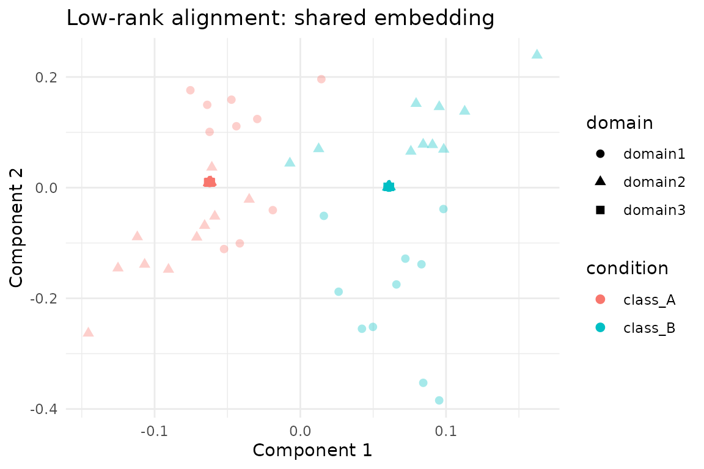

Overview
lowrank_align() balances low-rank reconstruction with
similarity-derived Laplacian structure. The method was designed for
partially observed labels: unlabeled samples contribute to the low-rank
term while labeled samples supply supervision through a similarity
kernel. This vignette walks through a semi-supervised alignment
workflow:
- Build a three-domain
hyperdesignwith missing labels in two domains. - Construct a label-aware similarity function for the Laplacian term.
- Fit
lowrank_align()and inspect the shared embedding. - Summarise alignment quality with RMS discrepancies between domains.
All code uses public APIs so you can transplant the pattern to your own data.
Building a Partially-Labeled Hyperdesign
We start from the packaged alignment_benchmark dataset,
convert each domain to multidesign objects, and
deliberately mask a subset of labels to illustrate the semi-supervised
behaviour.
alignment_benchmark <- manifoldalign::alignment_benchmark
# Convert each domain to a multidesign object
domain_list <- lapply(alignment_benchmark$domains, function(dom) {
multidesign(dom$x, dom$design)
})
domain_names <- names(domain_list)
domain_sizes <- vapply(domain_list, function(dom) nrow(dom$x), integer(1))
# Hide labels in alternating batches for the first two domains
semi_domain_list <- domain_list
semi_domain_list[[1]]$design$condition[seq(1, domain_sizes[1], by = 4)] <- NA
semi_domain_list[[2]]$design$condition[seq(2, domain_sizes[2], by = 4)] <- NA
semi_hd <- hyperdesign(semi_domain_list)
observed_labels <- purrr::map(semi_domain_list, ~ .x$design$condition) %>% unlist()
label_status <- tibble(
domain = rep(domain_names, times = domain_sizes),
status = if_else(is.na(observed_labels), "unlabeled", "labeled")
) %>%
count(domain, status)
label_status
#> # A tibble: 5 × 3
#> domain status n
#> <chr> <chr> <int>
#> 1 domain1 labeled 60
#> 2 domain1 unlabeled 20
#> 3 domain2 labeled 60
#> 4 domain2 unlabeled 20
#> 5 domain3 labeled 80Similarity Function for the Laplacian Term
lowrank_align expects a simfun that turns
the (possibly NA) label vector into an affinity matrix. The helper below
links samples that share the same observed label and leaves unlabeled
rows/columns at zero, which dovetails with the Laplacian masking
performed inside lowrank_align().
label_similarity <- function(labels) {
labs <- as.character(labels)
valid_levels <- unique(labs[!is.na(labs)])
n <- length(labs)
sim <- matrix(0, nrow = n, ncol = n)
for (lvl in valid_levels) {
idx <- which(labs == lvl)
if (length(idx) > 1) {
sim[idx, idx] <- 1
}
}
diag(sim) <- 0
sim
}
# Quick sanity check on a small slice
label_similarity(observed_labels[1:6])
#> [,1] [,2] [,3] [,4] [,5] [,6]
#> [1,] 0 0 0 0 0 0
#> [2,] 0 0 1 1 0 1
#> [3,] 0 1 0 1 0 1
#> [4,] 0 1 1 0 0 1
#> [5,] 0 0 0 0 0 0
#> [6,] 0 1 1 1 0 0Fitting lowrank_align
We request three components with a moderate balance
(mu = 0.35) between the low-rank term M and
the Laplacian term L. The operator-based solver keeps the
computation sparse without forming dense matrices.
lowrank_fit <- lowrank_align(
semi_hd,
y = condition,
simfun = label_similarity,
mu = 0.35,
ncomp = 3,
sv_thresh = 0.5,
solver = "operator"
)
str(lowrank_fit, max.level = 1)
#> List of 7
#> $ v : num [1:12, 1:3] -0.01432 -0.0177 -0.00885 -0.0121 -0.01832 ...
#> ..- attr(*, "dimnames")=List of 2
#> $ preproc :List of 2
#> ..- attr(*, "class")= chr [1:2] "concat_pre_processor" "pre_processor"
#> $ s : num [1:240, 1:3] -0.0296 -0.0622 -0.0624 -0.0626 -0.0623 ...
#> $ sdev : num [1:3] 0.0647 0.0647 0.0647
#> $ block_indices:List of 3
#> $ labels : Factor w/ 2 levels "class_A","class_B": NA 1 1 1 NA 1 1 1 NA 1 ...
#> ..- attr(*, "names")= chr [1:240] "domain11" "domain12" "domain13" "domain14" ...
#> $ mu : num 0.35
#> - attr(*, "class")= chr [1:5] "lowrank_align" "multiblock_biprojector" "multiblock_projector" "bi_projector" ...
#> - attr(*, ".cache")=<environment: 0x55de080910e8>
lowrank_fit$sdev
#> [1] 0.06468462 0.06468462 0.06468462Inspecting the Shared Embedding
The returned object is a multiblock_biprojector, so we
can extract aligned scores and SQL-like metadata just like other
multivarious models.
scores_tbl <- as_tibble(as.matrix(lowrank_fit$s), .name_repair = "minimal")
colnames(scores_tbl) <- paste0("comp", seq_len(ncol(scores_tbl)))
true_labels <- rep(alignment_benchmark$labels, times = length(domain_names))
scores <- scores_tbl %>%
mutate(
sample = row_number(),
domain = rep(domain_names, times = domain_sizes),
observed_condition = observed_labels,
condition = as.character(true_labels),
label_status = if_else(is.na(observed_condition), "unlabeled", "labeled"),
alpha = if_else(label_status == "labeled", 0.95, 0.35)
)
head(scores)
#> # A tibble: 6 × 9
#> comp1 comp2 comp3 sample domain observed_condition condition
#> <dbl> <dbl> <dbl> <int> <chr> <fct> <chr>
#> 1 -0.0296 0.124 0.0334 1 domain1 NA class_A
#> 2 -0.0622 0.0108 -0.0134 2 domain1 class_A class_A
#> 3 -0.0624 0.00978 -0.0142 3 domain1 class_A class_A
#> 4 -0.0626 0.00881 -0.0153 4 domain1 class_A class_A
#> 5 -0.0623 0.101 -0.0213 5 domain1 NA class_A
#> 6 -0.0623 0.0109 -0.0131 6 domain1 class_A class_A
#> # ℹ 2 more variables: label_status <chr>, alpha <dbl>
ggplot(scores, aes(x = comp1, y = comp2, colour = condition, shape = domain)) +
geom_point(aes(alpha = alpha), size = 2.1) +
scale_alpha_identity() +
labs(
title = "Low-rank alignment: shared embedding",
x = "Component 1",
y = "Component 2"
) +
theme_minimal()
Domain Agreement Diagnostics
Following the other alignment vignettes, RMS discrepancies quantify how tightly the domains co-register in the shared space. Values near zero indicate strong agreement between domain pairs.
rms_alignment(as.matrix(lowrank_fit$s), domain_sizes, domain_names)
#> # A tibble: 3 × 3
#> domain_i domain_j rms
#> <chr> <chr> <dbl>
#> 1 domain1 domain2 0.163
#> 2 domain1 domain3 0.120
#> 3 domain2 domain3 0.110Summary
-
lowrank_align()naturally accommodates missing labels: unlabeled nodes stay in the low-rank term while the Laplacian only couples labeled pairs. - The label-aware similarity function above produces a sparse Laplacian without touching unobserved samples, matching the algorithm’s expectations.
- On the benchmark data the first three components cleanly separate the two latent classes and keep per-domain RMS discrepancies low despite masked supervision.
- Switch to the explicit solver or adjust
sv_threshwhen working with smaller problems where dense matrices are affordable.